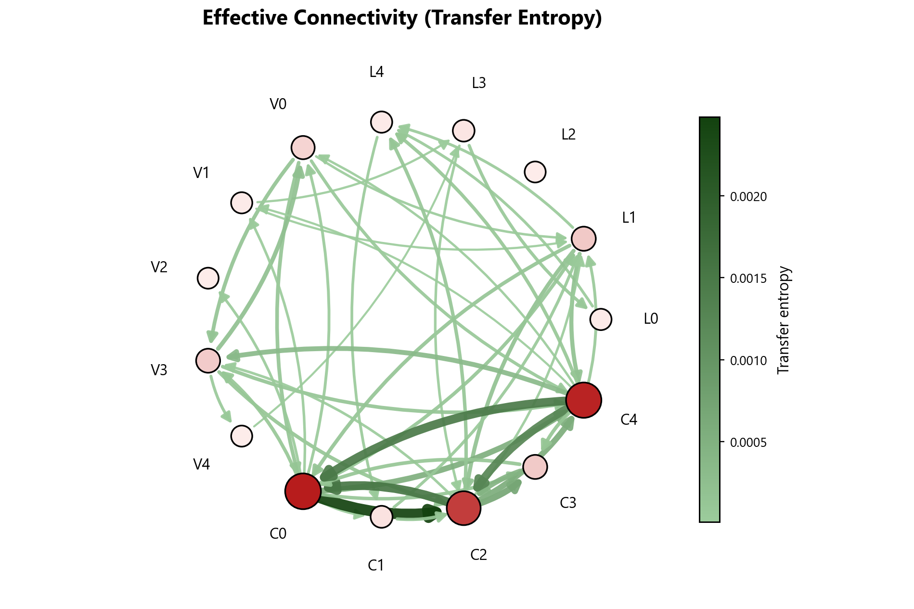
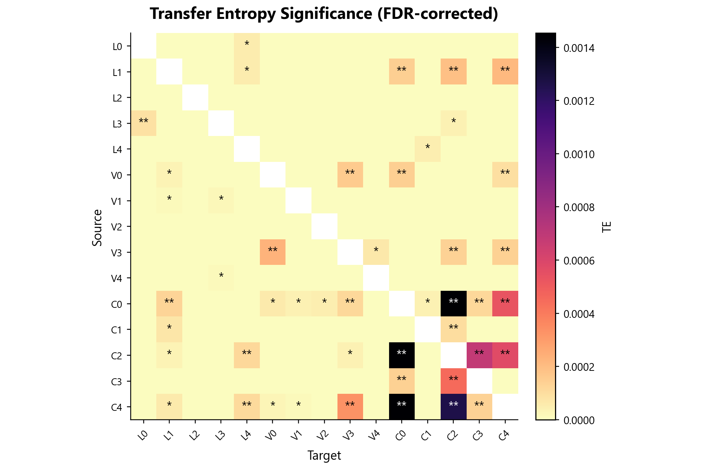
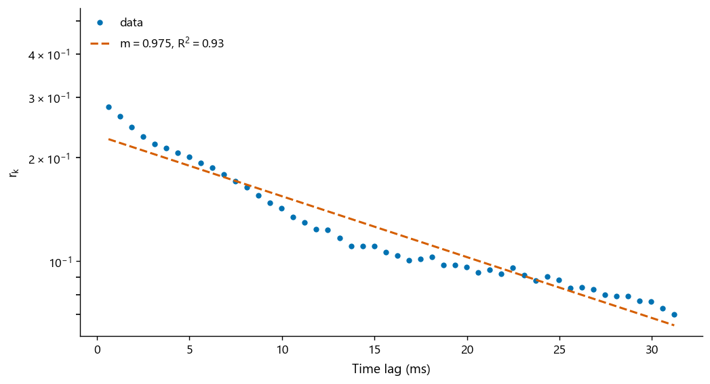
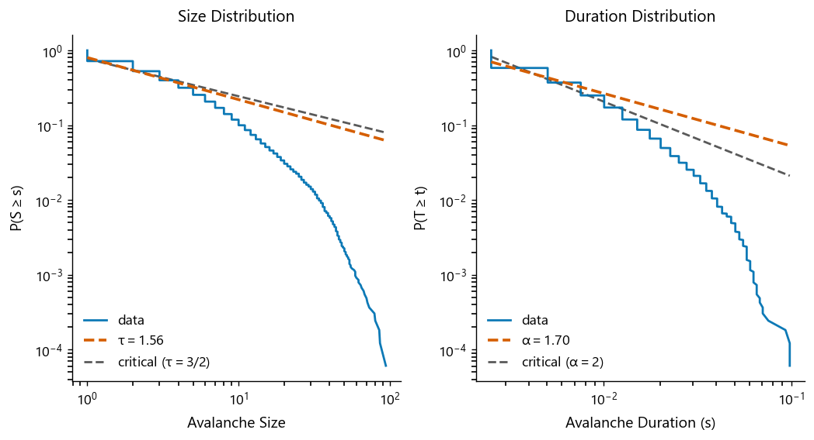
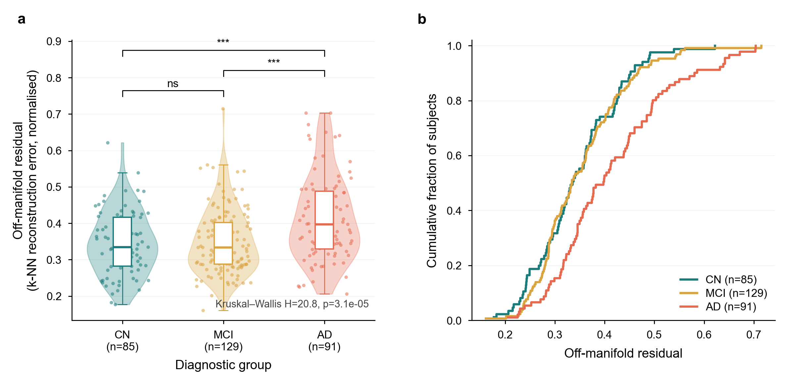
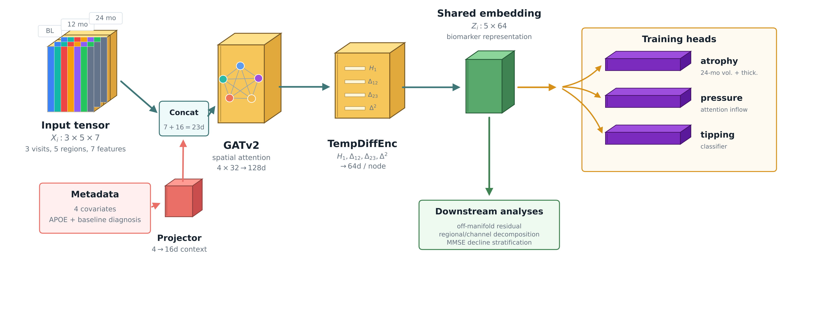
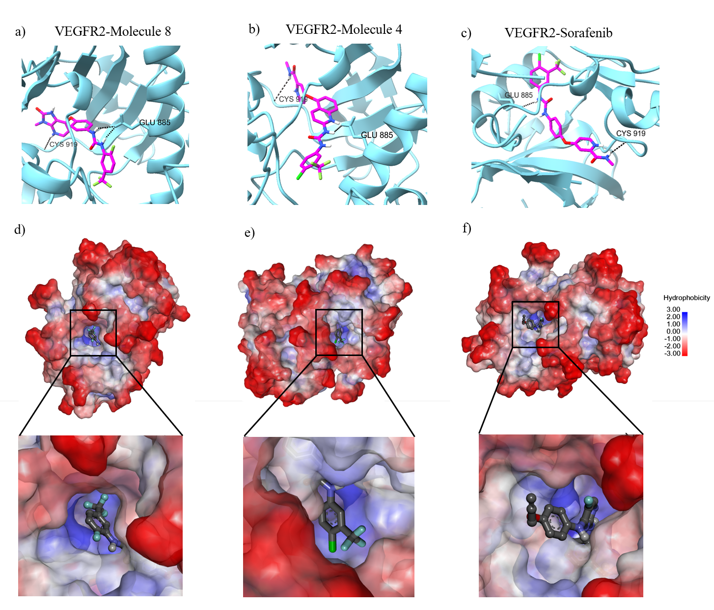
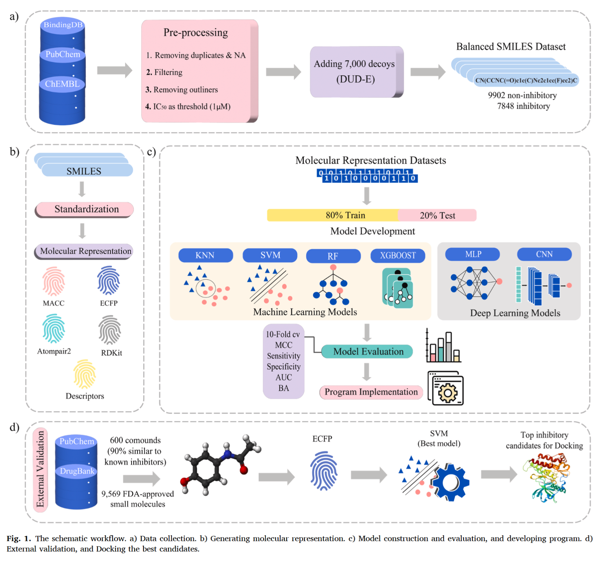

research projects
neurocomplexity package for complex systems analysis of neural populations
systems neuroscience lacks a unified toolbox for criticality, information flow, and dimensionality.
built neurocomplexity, a python package that integrates seven estimator families (branching ratio, avalanche exponents, transfer entropy, pid, granger autonomy, participation ratio)
on an immutable spike‑train data model with block‑bootstrap inference and surrogate tests. also validated against ground‑truth simulations; on neuropixels data, a scale‑free signature is recovered:
avalanche exponents αs=1.56±0.02, αt=1.71±0.02, branching ratio invariant to unit count, and collapse under sub‑sampling.
the same exponents recur on allen spontaneous data.
the package ships with a frozen benchmark suite and content‑addressed provenance. 2026 - present
view project
view project




alzheimer trajectory atypicality

two people with the same atrophy can decline differently.
we built a spatio-temporal graph attention network (st-gat) that reads three longitudinal mri visits from executive-control and salience regions.
it produces a 64‑d trajectory embedding; from that we derive an “off‑manifold residual” a geometric measure of how unusual a subject’s disease course is.
the residual is largest in alzheimer’s (h=20.8, p<0.001), independent of atrophy, age, sex, or apoe, and predicts 24‑month mmse decline even when the model is trained only on baseline+month‑12 images
(partial ρ=−0.14, p=0.018). the signal maps to salience‑network edges (anterior insula, vlpfc, dorsal acc) and loads on trajectory curvature. a diffusion pseudo‑time coordinate turns out to be a graph artifact,
which we flag as a caution. the residual is a candidate prognostic marker. 2025 - 2026


exploration of cortical microcircuits and inhibitory stabilized networks (isn)
this project investigates the dynamics of cortical networks and the role of
inhibition in maintaining stability. 2025
view project


view project
some of my previous projects were deleted
and re-uploaded in a single 'computational-neuroscience-projects'
repository. this repo includes three basic, small projects exploring
neural dynamics, spectral analysis, and visual/behavior coding (allen institute, visual behavior optical physiology dataset) using various
computational methods. 2024 - 2025
view project


view project
screening and classification of anti-angiogenic vegfr2 inhibitors with supervised machine learning, deep learning, molecular docking, and molecular dynamics simulation.
this project aims to address the efficiency limits, resistance, and toxicity challenges of conventional drug discovery by utilizing scalable virtual screening to identify novel inhibitors of vascular endothelial growth factor receptor 2 (vegfr2). we developed and evaluated four machine learning classifiers (rf, svm, knn, xgboost) and two deep learning networks (1d-cnn, mlp); high-probability active candidates were evaluated for admet profiles and drug-likeness filters using swissadme, docked into the vegfr2 atp-binding pocket via pyrx, and validated using detailed 400 ns molecular dynamics simulations in gromacs to analyze local structural and thermodynamic stability. The entire trained workflow was integrated into an open-source graphical software platform named vegfr2pred and published on github. 2024 - 2025
view project
view project


that's me holding a profiterole. photo is taken in 2024 by parya